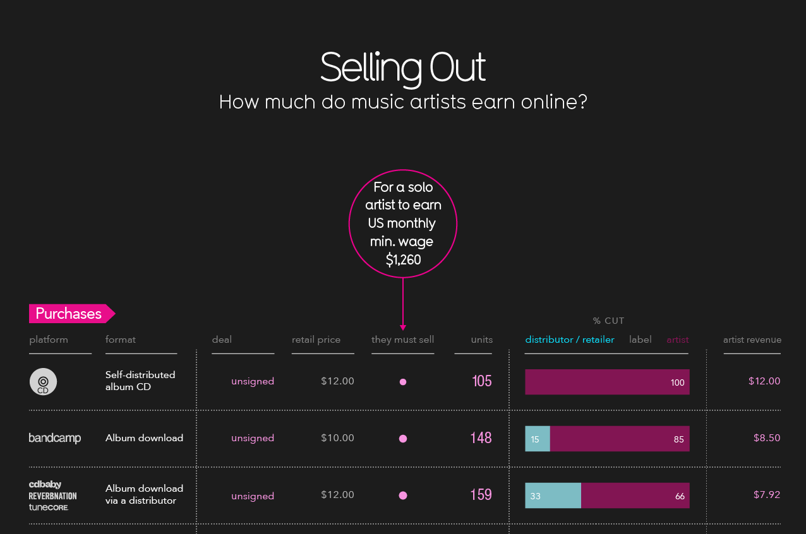
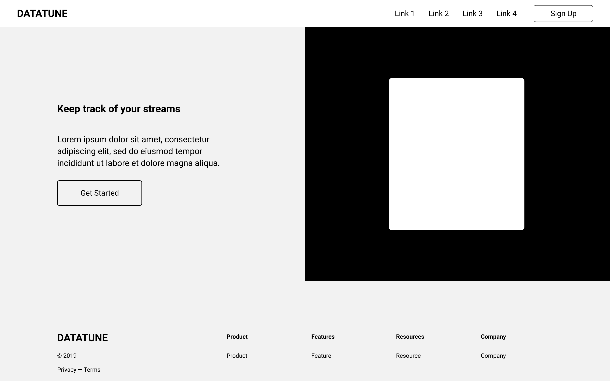
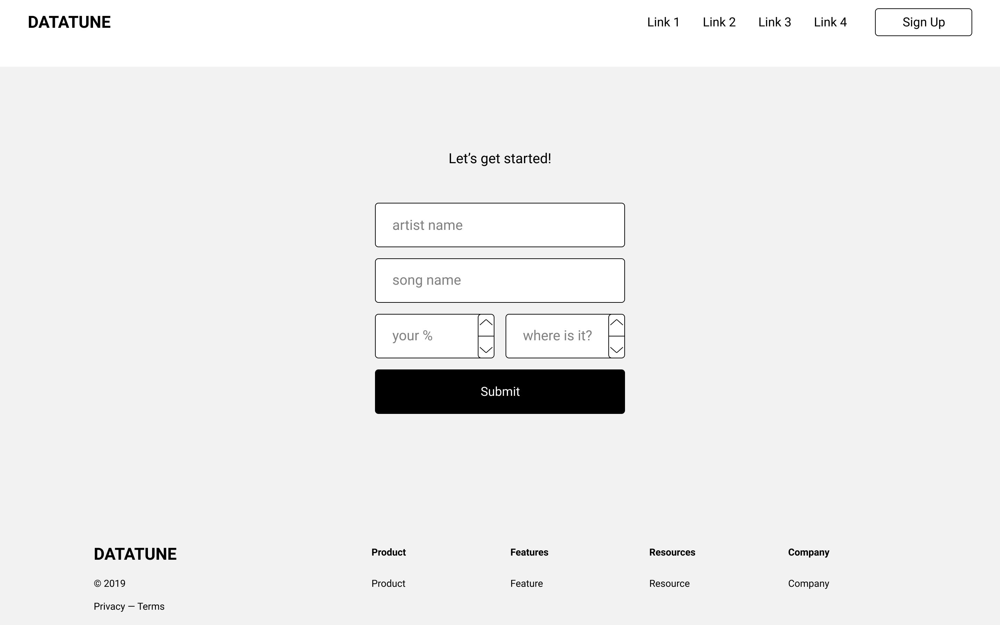
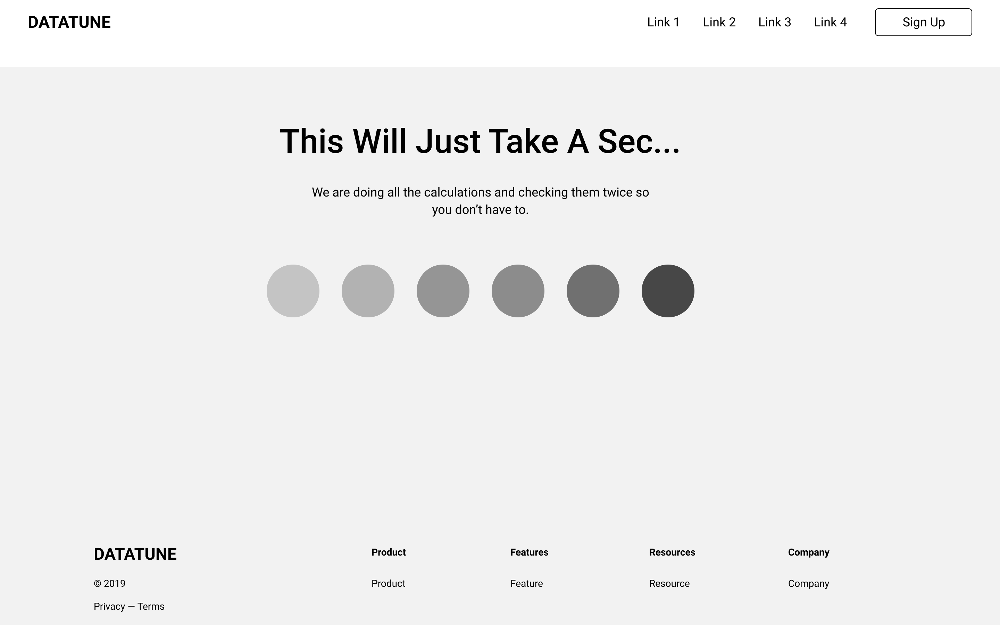
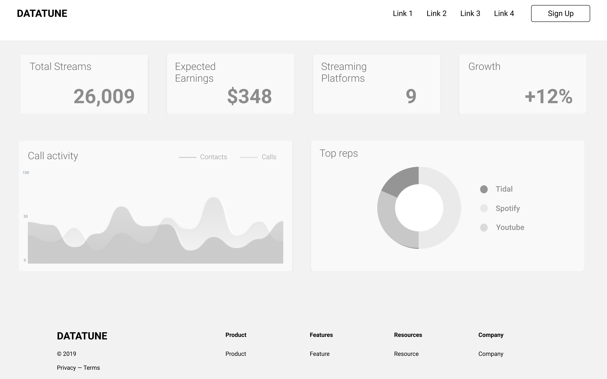

DataTune: Take Control Of Your Streams
The Data
The Problem
Income from streaming music varies greatly from platform to platform, making it difficult for musicians to understand where they may make the most money from and how much energy they should put into promotion on certain platforms.
Mistakes to Avoid
- Trying to do too much
- Not designing for the target user
- Too much focus on technology and features
- Falling for the first solution
- Considering feasibility during brainstorming
- Prototyping in too high of a fidelity
- Not scheduling time for iteration and refinement
- Releasing before fixing the small bugs
Value Proposition
Give users the ability to track different platforms pay-out percentages
Allows users to view their potential income on platforms they have yet to upload music to
Brings awareness to financial disparities within the music industry
User Insights:
“I’m always surprised when the direct deposit comes in ‘cause I forget about it”
“It’s really hard to know how much money will be coming in each quarter from streaming”
User Scenario
Bryndon is a drummer who makes his living from touring and playing on records. The Publishing Rights Organization(PRO) that represents Bryndon pays out his streaming royalties quarterly, though he has no way of anticipating how much to expect. Since Bryndon is on the road often he needs a way to anticipate his quarterly income from streaming royalties while on the go and would appreciate infographic that made it easy for him to quickly understand where his income was coming from.
Project Themes
Infographics
Display easy to understand and up to date graphics based on users current plays and platforms they are streaming on
Analysis
Compare estimated income from different platforms and demonstrate on which platforms the user is performing well
Mobile
Easy to access while on the road
Imagining a Conversation
I wonder how much my streaming royalties earned this quarter?
I can figure that out for you.
All I need to know is what songs are yours and where you have them streaming.
Okay! I'll enter those percentages and which platforms they are streaming on now.
Awesome! Let me calculate that for you….
All Done! Here is a breakdown of your estimated earnings from this quarter.
Amazing!! Can you show me a breakdown of where this income was coming from?
Definitely, here ya go!
Thank you!
High Level Task Flow
Evaluated Task Flow
Improvements
After evaluating the task flow a number of issues began to appear. There were too many tasks for the user per page. I solved this by breaking up the tasks to more pages. The dialog was too stiff, it needed to seem more human. By using clear verbs it because more user friendly. Lastly, by moving the sign up page to the end of the flow users could try out the product without having to commit to signing up before hand.
Wireframes
   Design Retrospective
Are the details right to support the scenarios? Are the users goals being achieved? Does the design work well in the user’s environment and context?
I believe the user's goals are being achieved with this design, but it is not the most mobile friendly execution. My thinking is that there would be an application for users to monitor streaming activity, but the uploading of data would be handled on the website.
High Fidelity & Prototype

When moving onto high fidelity comps I decided to focus on the mobile experience since it was more inline with the user scenario. The prototyped user flow depicts a new user entering data and viewing their synthesized data once it has finished processing. The user may then sign up for the service to save this information to their profile.
Figma Prototype
To improve upon these designs I would:
- Conduct usability testing
- Build out more pages and functions
- Build & test a mobile app
Any Questions?
Feel free to email me.